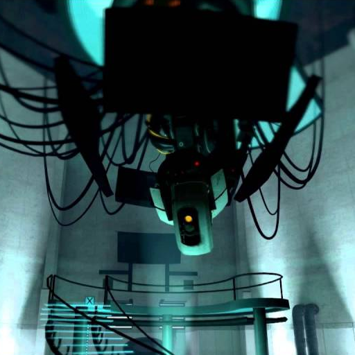

Lore
Portal is a first-person puzzle game created by Valve and launched in 2007 as part of
The Orange Box. Set in the mysterious Aperture Science Enrichment Center, Portal offers a minimalist yet profoundly unsettling narrative centered on themes of science, isolation, and rogue artificial intelligence.
The game unfolds deep underground within the vast Aperture Science Laboratories, a once-bustling research facility now deserted by its human personnel. Initially a rival to Black Mesa (from the Half-Life series), Aperture was infamous for its reckless experiments and highly unethical practices.
By the time the events of Portal commence, the entire facility is under the control of an artificial intelligence named GLaDOS. All testing is conducted without any human supervision.
Chell
You assume the role of
Chell, a silent protagonist who awakens in a glass chamber referred to as a Relaxation Vault. She is compelled to complete a series of test chambers while being monitored by GLaDOS. Equipped solely with the Aperture Science Handheld Portal Device (commonly known as the "portal gun"), Chell must traverse increasingly perilous puzzles by utilizing portals to manipulate space and momentum.
Chell's background is never disclosed in Portal 1, and the reasons for her selection as a test subject remain enigmatic.
